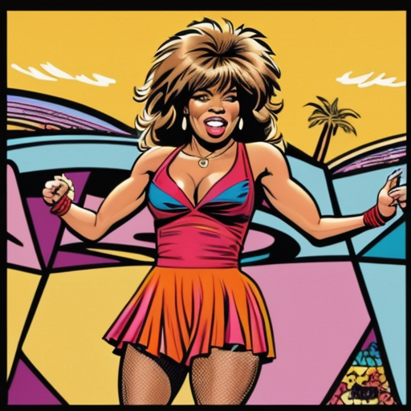
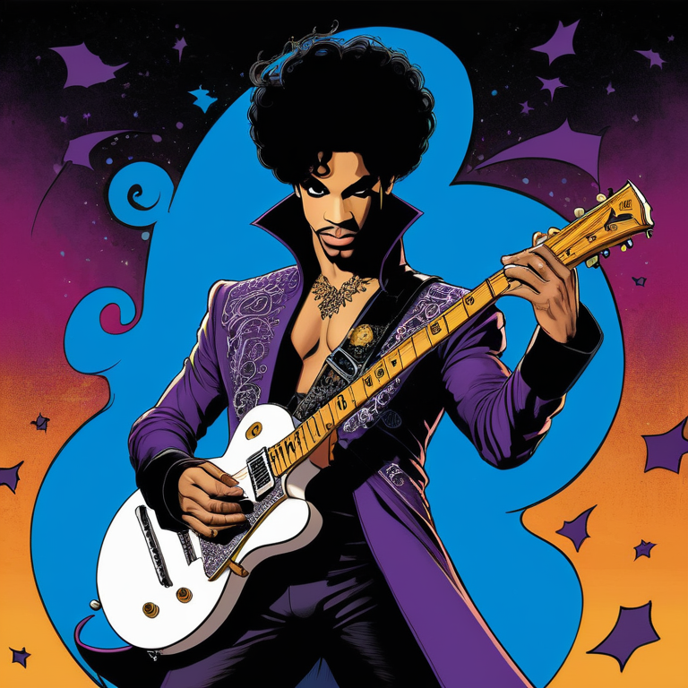
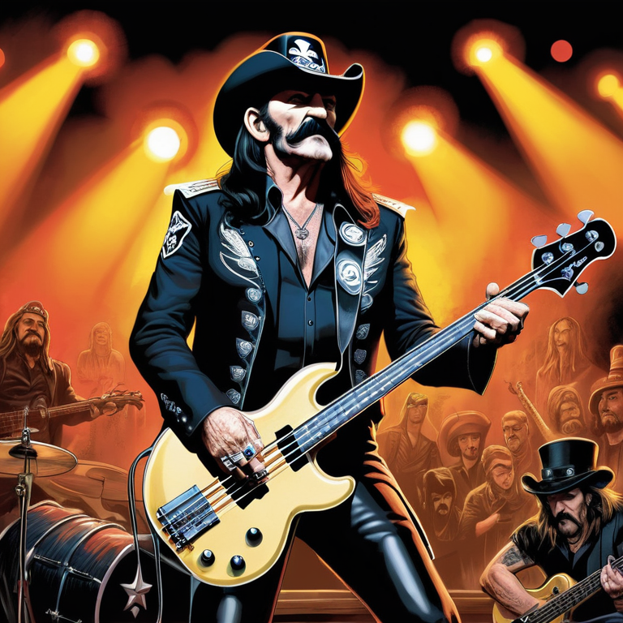
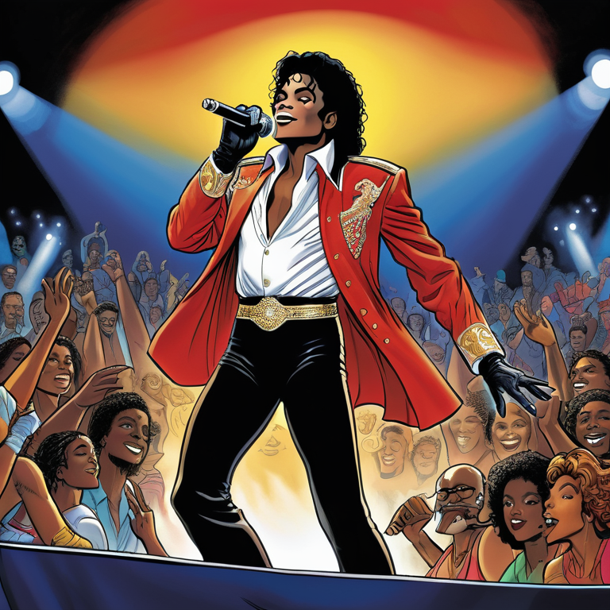
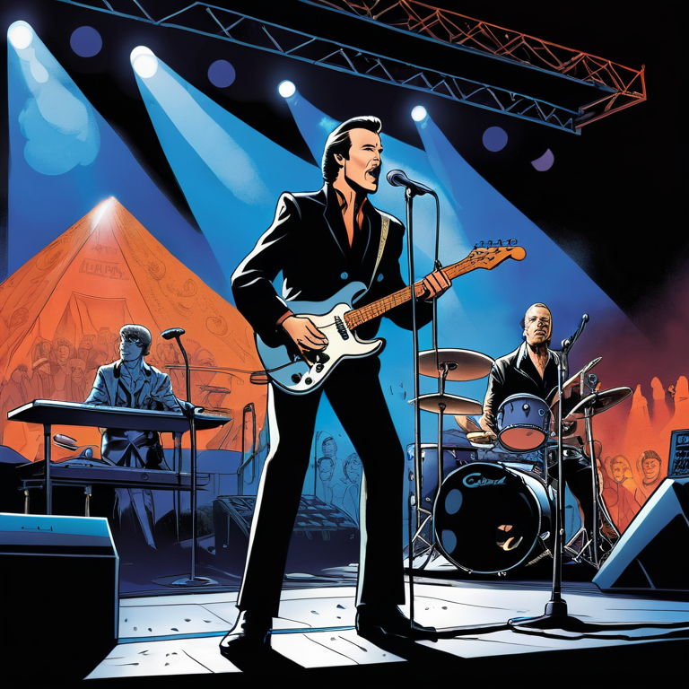
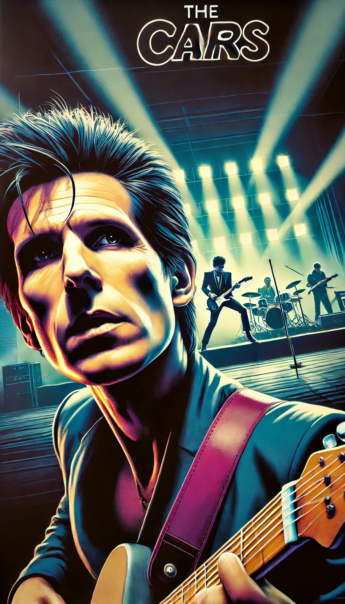
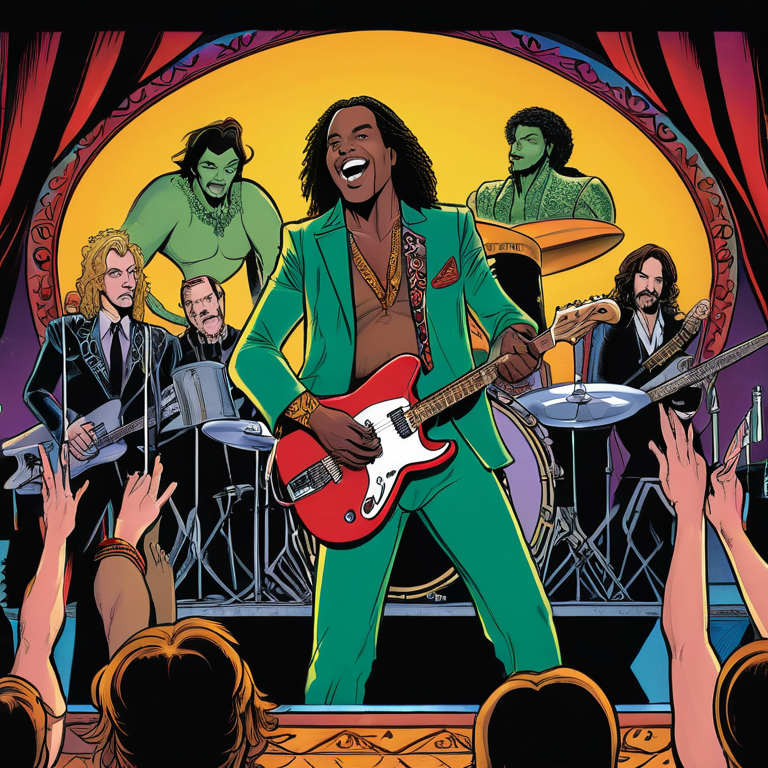
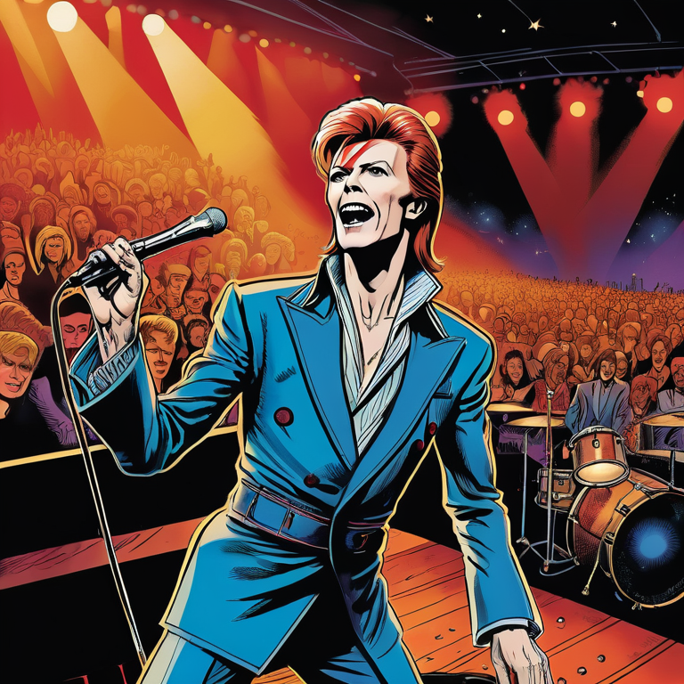
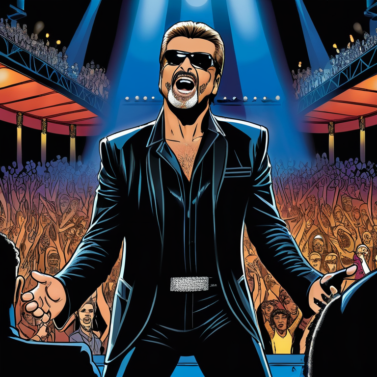

Hiba
known for her smile and her love for coffee
Puya
known for his leadership and his ability to motivate his team
Heiko
Creative in the development of new cocktails and drink innovations and the matching soundtrack combined with ambient lighting
Irina
creative and innovative in creating new national and international dishes served with love and smile for our guests.
Tina
The “Queen of Rock ‘n’ Roll,” an iconic singer known for her powerful voice and hits like Proud Mary and What’s Love Got to Do with It.
Prince Rogers
Known as Prince, an American singer, songwriter, and multi-instrumentalist celebrated for his genre-blending music, bold style, and electrifying performances.
Lemmy
British singer, bassist, and songwriter, best known as the frontman of the rock band Motörhead. Recognized for his raspy voice, rebellious persona, and iconic hit Ace of Spades.
Michael
The “King of Pop,” was an American singer, songwriter, and dancer known for his groundbreaking music, innovative dance moves, and iconic albums like Thriller, Bad, and Dangerous.
Robbie
A legend lighting designer, known for his innovative tracking system that make shows bigger an easier to handle.
Amy
British singer and songwriter known for her soulful voice, raw lyrics, and unique style. With hits like Rehab and Back to Black, she left a lasting impact on music.
Kurt
Kurt Cobain, an American musician and frontman of the rock band Nirvana. Known for his raw voice and intense lyrics, he became a defining figure of 1990s grunge with songs like Smells Like Teen Spirit.
Chester
An American singer and songwriter best known as the lead vocalist of Linkin Park. Known for his powerful voice and emotional depth, he helped define modern rock with hits like In the End and Numb.
Chris
Bassist and co-founder of the new wave band Ultravox. Active primarily in the 1970s and ’80s, he contributed to the band’s distinctive synth-driven sound, with hits like Vienna and Dancing with Tears in My Eyes.
Andrew
A British musician and founding member of the influential electronic band Depeche Mode.
Ennio
Italian composer and conductor renowned for his film scores, especially in Westerns like The Good, the Bad and the Ugly and Once Upon a Time in the West.
Ric
American musician, songwriter, and producer best known as the lead vocalist and rhythm guitarist for The Cars. His distinctive voice, quirky style, and songwriting defined hits like Drive and Just What I Needed.
Tim
DJ, producer, and songwriter known for his melodic EDM hits like Wake Me Up and Levels. His innovative sound and infectious beats brought electronic music to the mainstream, making him a global music icon.
Aretha
“Queen of Soul,” an American singer celebrated for her powerful voice and timeless hits like Respect and Natural Woman. Her influence on soul, gospel, and pop music made her a cultural icon.
Malcolm
Australian musician and co-founder of the rock band AC/DC. Known for his powerful rhythm guitar playing and songwriting, he was a driving force behind the band’s raw, hard-hitting sound, with hits like Back in Black and Highway to Hell. His influence on r
David
British singer, songwriter, and actor known for his innovative music, eclectic style, and theatrical personas like Ziggy Stardust. With hits like Space Oddity, Heroes, and Let’s Dance, he constantly reinvented himself, leaving an enduring impact on rock.
George
Singer, songwriter, and producer known for his soulful voice and pop hits like Faith, Careless Whisper, and Freedom! ’90. Rising to fame with Wham! before a successful solo career, he became an icon of 1980s and 1990s pop music.
Guru
Musician and DJ best known for his 1990s dance hit Infinity, which became an anthem of the acid house and rave era. His blend of electronic beats and saxophone made him a defining figure in dance music, leaving a lasting impact on the genre.
Joe
Known for his gritty, soulful voice and passionate performances. Famous for his covers of With a Little Help from My Friends and You Are So Beautiful, Cocker’s unique interpretations and emotional depth made him a beloved figure in rock and blues music.
Udo
Singer, composer, and entertainer celebrated for his distinctive voice and timeless songs in the German-speaking world. Known for hits like Griechischer Wein and Merci, Chérie, he captivated audiences with his heartfelt lyrics and powerful performances.
Holger
Lecturer and motivator known for his engaging teaching style and expertise. He combines academic knowledge with inspirational guidance, motivating students and professionals to achieve their potential. His approach emphasizes practical learning.
Freddie
Singer, songwriter, and the iconic frontman of the rock band Queen. Known for his powerful voice, flamboyant stage presence, and hits like Bohemian Rhapsody and We Are the Champions. Mercury is celebrated as one of the greatest performer in rock history.